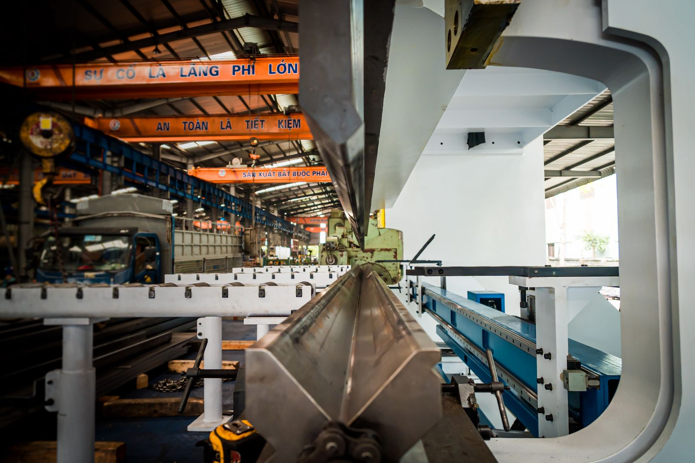
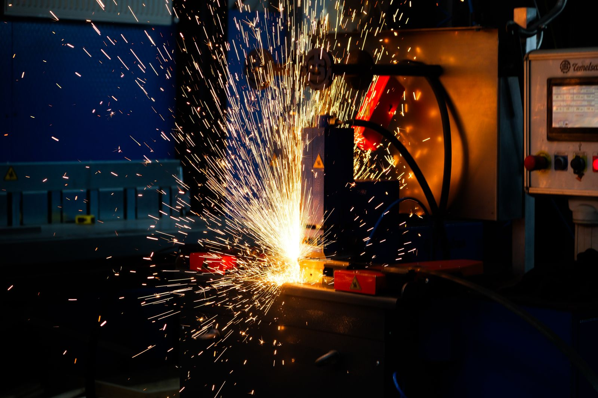

Material selection
Weathering steel patina: what changes, and why
A weathered surface tells a story about exposure. Understand the material before you specify its appearance.
Read the guide ↗Practical reading for buyers, fabricators and project teams working with weathering steel.
A weathered surface tells a story about exposure. Understand the material before you specify its appearance.
Read the guide ↗
Similar appearance does not make two specifications interchangeable. Begin with the full designation on the drawing.
Read the guide ↗
A useful inquiry connects the material list with the environment, finish and delivery requirements.
Read the guide ↗
A weathered appearance cannot verify a steel grade. Procurement needs an agreed documentary trail.
Read the guide ↗A theoretical weight is useful for planning, provided its assumptions stay visible.
Read the guide ↗
Define the process around the approved material and drawing, with separate requirements for structural and visible surfaces.
Read the guide ↗
Weathering steel should be selected for the real environment, including the small areas where water and debris collect.
Read the guide ↗The material specification continues through dispatch and site handling. Plan how each piece arrives, is identified and is stored.
Read the guide ↗Try a broader term or another topic.
Send the grade, size and quantity. Let’s define the next step.